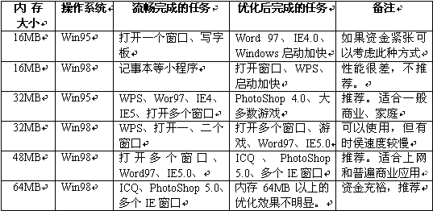
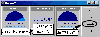

|
|
| 当前位置：电脑报电子版 > 1999 年 > 42 期 > 软件世界 > 内存少 我的电脑照样跑——小内存电脑软哽件系统的选择 |
| 《 内存少 我的电脑照样跑——小内存电脑软哽件系统的选择 》 |
一、选择多大的内存 选择内存的多少要根据你的使用目的，如果你是家庭使用和一般的商业使用，就可以不需要太大的内存，只要配上刚刚够用的内存，再对系统进行适当的优化，在日常工作中就可以得心应手了。下面就列出配备不同内存的系统，可以完成的操作，如表。 二、选择什么样的主板 如果是新装机，内存配得比较少，主板的选择就非常有讲究了。1．内存插槽 一定要选择有三个内存条插槽的，因为内存配得少，以后添加内存条的可能性很大，内存条插槽多，以后添加的自由度就大。 2．集成显卡 有些主板上集成的显卡没有显存（如很多810主板），显卡使用一部分内存作为显存，这样给内存不多的系统雪上加霜。现在有很多显存的显卡并不贵，因此还不如将少买内存节余下来的资金买块单独的好显卡（或者有显存的集成主版）。 3．Ultra DMA/66接口 Ultra DMA/66是新一代硬盘接口标准，这种硬盘接口标准使硬盘数据传输速度得到校大的提高，目前新出品的硬盘都支持Ultra DMA/66标准。选择一个Ultra DMA/66硬盘和一个支持Ultra DMA/66硬盘的主板，就可以增加虚拟内存的速度，稍稍缓解因为内存不足而大量使用虚拟内存引起的系统速度下降。 三、选择什么样的CPU CPU对内存没有多大的影响力，但内存对CPU的运行速度影响比较大，选择CPU没有特别的要求，如果你认为少买内存省下了不少金钱，可以选择相对快一些的CPU。另外要注意内存的速度要配合上CPU的速度。四、选择什么样的硬盘和光驱 现在硬盘速度对系统的影响非常大，特别是小内存系统。因此应尽量选择Ultra DMA/66标准的硬盘。如果再多加一百元，选择转速为7200，带2MB CACHE的硬盘是再好不过了。这种硬盘可以使虚拟内存的速度得到很大的提高，使你的少内存系统不至于慢得难以忍受。光驱没有什么好选择，但注意不要选择带缓存少的光驱（一般的都是带256KB CACHE，有的带516KB，有少部分只带128KB），缓存少的光驱要提高读取速度需要较多的内存。 五、选择什么样的操作系统 内存少了，系统的性能可能大幅度降低，使得你的超级赛扬550可能还没有别人的奔腾166快。根据你的使用目的和安装的系统，内存要基本配够。选择一个合适的内存的原则，就是如果在80％的使用时间内都没有明显的等待，就是合适的。下面就给出了各种系统可以选择的合适内存。1．Windows 95 如果你的预算实在是紧张，就只购16MB内存或32MB的内存，然后安装Windows 95，上网使用IE4或其他小型的浏览器，文字处理使用WPS或写字板也流畅。也可以使用Word 97编辑不复杂的文件。 2．Windows 98 选择32MB内存可以说是最起码的要求，如果选择16MB，你的系统可能需要半个小时才能启动完毕。如果48MB内存，就可以满足基本的需要了。但48MB内存买起来并不方便，节约的钱有限，如果没有特别的需求（如网虫、超级游戏迷、经常的平面图形设计等），就可以暂时使用到32MB内存，虽然速度慢一点，但优化优化，也不是不能忍受的，但节约下来的钱可以买好一点的主板＋好一点的显示器＋好一点的硬盘＋好一点的显卡，超值。 3．Windows 2000 如果你要经常使用Windows 2000，说明你很有钱，或者你一天到晚没有事做，很有耐心。为流畅地运行Windows 2000准备64MB内存吧，如果你还要使用Office 2000等所谓的跨世纪软件，还得再加上64MB。其实大多数人不用也罢，Windows 98完全可以满足你的需要——直到内存降价的时候。 4．Windows NT 40 和Windows 2000没有多少区别，内存要求可能要少些（如果只使用个人版的话），也可能要多些（如果使用网络版的话）。 5．服务器或工作站 看看名字，就知道内存是少不了的。直接花2000多元去买128MB一根的内存条。如果是小型网络的服务器或打印服务器，可以选择64MB内存。 6．Linux 现在对Linux的赞美很多，但Linux是属于服务器性质的操作系统，所以想玩Linux的朋友还是多配点内存的好，免得你到时候大骂Linux。 六、维护和优化 我们一般的应用，选择一个合适的内存就可以了。所谓的慢只是相对的，这要看你是对几秒钟关注还是对几百元关注。如果配备了足够的基本内存，我们还可以用多种方法来优化系统，使系统的速度不下降，或者下降的速度不易觉查，不至于耽误我们的工作或者引起我们情绪上的不愉快。实际上，如果采用综合优化和维护手段，你可以使32MB的系统像48MB的系统一样运行。1．内部系统优化和维护 通过对Windows系统进行优化设置，改变系统中一些消耗内存的配置，可以节约出5MB～10MB的内存。对系统经常维护，可以加快系统的速度，减少小内存对系统的影响。 2．通过内存优化软件优化内存 内存优化软件有两种，一种是内存整理，一种是内存压缩。 所谓的内存整理，就是系统启动后，经过一段时间的使用，各种程序加载和卸载，内存中就充满了许多不连续的小空间，这些小空间大型程序不能利用，就要进行大量的磁盘虚拟内存的操作。而内存整理工具可以像磁盘整理工具样对内存空间进行重新的排列整理，将许多小的碎片空间整理为一个大的空余空间，从而加快程序的运行速度。这些工具还可以将内存空间释放以供大型的程序使用。 这类工具比较多，如Freemem Professional、Free Memory、Memory＋（http:∥wwwtfi－technologycom/mplltrexe）、WinRam－Booster Pro 99、MemTurbo、WinRamTurbo 134等，可以参见《电脑报》32期第10版张熙平的文章《内存优化工具》。 另一种就是对内存中的数据进行实时压缩，使内存能够容纳更多的数据。如著名的MagnaRAM 97。 MagnaRAM 97这个工具对内存少的朋友，可能有意想不到的帮助。该工具由出品Norton工具的Quarterdeck公司开发。可以将内存的一部分空间划为可压缩的内存空间，由MagnaRAM 97管理（可以在系统中看到内存的容量增加了），虽然压缩内存中的数据需要压缩或解压，但速度仍然比使用虚拟内存快上许多。MagnaRAM 97不但有内存压缩功能，还有内存优化的功能，例如压缩虚拟内存提高虚拟内存使用速度，充分利用磁盘缓存等（如图），下载地址http:∥wwwmydowncom/soft4/man97zip。 |
| 下载本期推荐软件 | 页 首 |
| 《电脑报》版权所有，电脑报网站编辑部设计制作发布 |